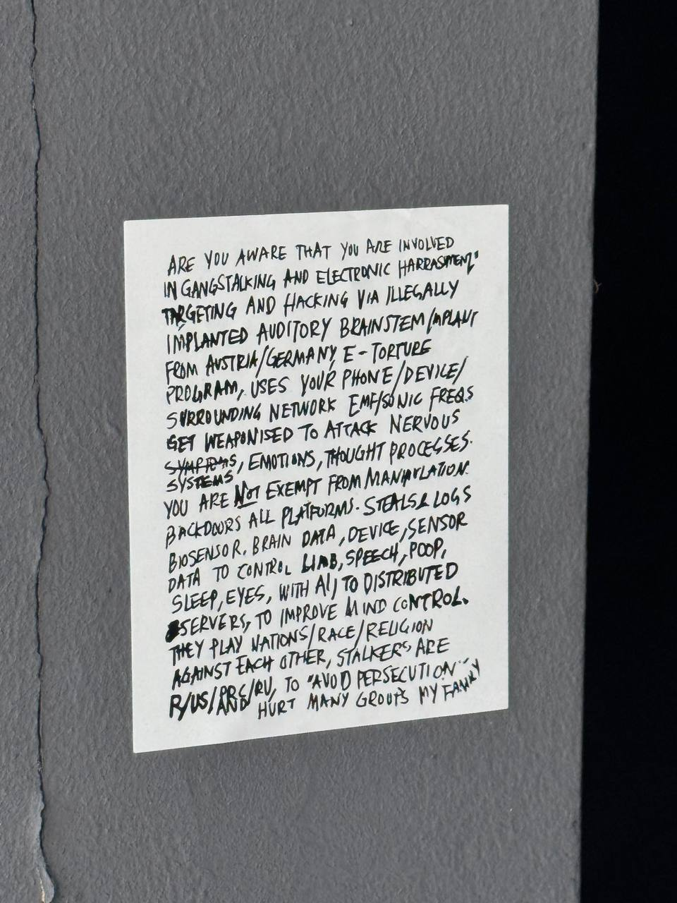

One handwritten note on a wall in Singapore, taken apart every way it can be taken apart — the ink, the grammar, the belief, the island it lives on, the file itself — and at the bottom, a brush that plays a memory back. Everything here is measured. Nothing here is decorative.

Hover or tap the dots. The quiet state is the photo; the knowledge is in the reveal.
ARE YOU AWARE THAT YOU ARE INVOLVED IN GANGSTALKING AND ELECTRONIC HARRASMENT TARGETING AND HACKING VIA ILLEGALLY IMPLANTED AUDITORY BRAINSTEM/IMPLANT FROM AUSTRIA/GERMANY. E-TORTURE PROGRAM, USES YOUR PHONE/DEVICE/ SURROUNDING NETWORK EMF/SONIC FREQS GET WEAPONISED TO ATTACK NERVOUS SYSTEMS, EMOTIONS, THOUGHT PROCESSES. YOU ARE NOT EXEMPT FROM MANIPULATION. BACKDOORS ALL PLATFORMS. STEALS & LOGS BIOSENSOR, BRAIN DATA, DEVICE, SENSOR DATA TO CONTROL LIAB, SPEECH, POOP, SLEEP, EYES, WITH AI TO DISTRIBUTED SERVERS, TO IMPROVE MIND CONTROL. THEY PLAY NATIONS/RACE/RELIGION AGAINST EACH OTHER. STALKERS ARE R/US/PRC/RU, TO "AVOID PERSECUTION" Y HURT MANY GROUPS MY FAMILY
Multi-pass transcription (full frame + per-line deskewed crops). Ambiguities flagged, not resolved: LIAB ( LIABLE? LAB? ), the stray Y, HARRASMENT's spelling.
Tested the way you test a real one, at every layer, with real tooling.
Text: letter frequencies sit on English (χ² 54.7/df25), every repeated n-gram is an ordinary
word, the acrostic is noise, there is not a single digit in the document, and the divided-line
hypothesis — proportion hiding in the margins — died cleanly: no page diagonal, no inter-line
gap, no φ / 2:1 / 3:2 clustering. R/US/PRC/RU are country codes.
File: progressive JPEG, libjpeg-default scan script, JFIF-only APP0, zero trailing bytes. Spatial LSB balance 0.5005. Then the layer that actually matters — DCT coefficients, read with a real JPEG library and attacked properly: the Westfeld pair-chi-square comes back 3401 on df 24, nowhere near the embedding signature (JSteg makes value pairs equal; these are wildly natural). The AC-LSB stream has entropy 6.39/8.0 with structured repeats — not the 7.99 flatness an encrypted payload has — and binwalk carves zero embedded files. Verdict: nothing is hidden in this file. The photo "doesn't look taken-in-person" because it has travelled twice through chat — EXIF stripped, capped at 1280px — not because it is fake.
It is a total system with no exit: omnipotent they, coverage ALL, and you —
the reader — conscripted as perpetrator in line one. Technical vocabulary draped over the body:
BIOSSENSOR, DISTRIBUTED SERVERS, and then, between them, POOP.
The body leaks through the systems language. That mismatch is the most human line in the document.
Clinically, from writing alone (impression — not a diagnosis of anyone): a persecutory system with somatic and influence content, in the classic influencing-machine lineage — Tausk's 1919 machine rebuilt as networked electronics. Differential runs delusional disorder (persecutory) against schizophrenia-spectrum against stimulant/medical causes that must be excluded first. Beliefs track the era's available machinery: telegraphy → radio → microwaves → implants → AI. This note will date itself faster than its author can reprint it.
Estate centroids, linear lon/lat projection — position is geography, not decoration. 20+ documented cases surveyed: the exact genre is scarce, the paste-up culture is not. Yishun ran it twice across three outlets and a reddit thread asking "is this even possible?".
Paint With Music (Magenta DDSP) redrawn as an instrument for the field index — no model, no server. Below is not a drawing pad: it is my corpus, measured. The hairline is real message density — 31 months, 184,560 messages, straight out of the index. Drag across it and each month speaks its true volume.
drag along the timeline — x = month (2023-06 → 2026-10), pitch = log(count), loudness = count. The 2026-09 ridge is 63,974 messages. The line is data — nothing here is seeded.
POOP between BIOSSENSOR and
DISTRIBUTED SERVERS — the body leaking through the systems vocabulary.Everything above, in unedited report form: note analysis · sg survey · 10-18 map · steal list · house os · project fold